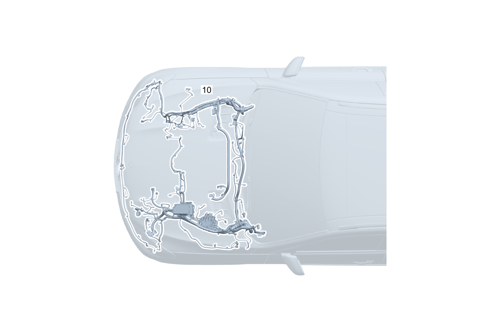

| № | Артикул | Название | Кол. | Примечание | Ограничение |
|---|---|---|---|---|---|
| 10 | A 167 540 26 39 | Электрический жгут (ELEKTRISCHER LEITUNGSSATZ) | 1 | ЖГУТ ЭЛ.ПРОВОДКИ ДВИГАТЕЛЯ НА КУЗОВЕ [-] При заказе указать идент. номер [-] В жгуте проводов предусмотрена возможность подключения соответствующих дополнительных опций согласно производственному номеру а/м | |
| 15 | Q 000000000002 | - Возможен заказ только отдельных компонентов жгута проводов | 1 | Кондиционер в передней части кузова | 94B/ME10 |
| 15 | Q 000000000002 | - Возможен заказ только отдельных компонентов жгута проводов | 1 | Звуковой сигнал Рулевое управление: Влево | (800+050/801) |
| 15 | Q 000000000002 | - Возможен заказ только отдельных компонентов жгута проводов | 1 | Звуковой сигнал Рулевое управление: Влево | |
| 15 | Q 000000000002 | - Возможен заказ только отдельных компонентов жгута проводов | 1 | Звуковой сигнал Рулевое управление: Вправо | (800+050/801) |
| 15 | Q 000000000002 | - Возможен заказ только отдельных компонентов жгута проводов | 1 | Звуковой сигнал Рулевое управление: Вправо | |
| 15 | Q 000000000002 | - Возможен заказ только отдельных компонентов жгута проводов | 1 | Звуковой сигнал Рулевое управление: Влево | (800+050/801)+(6U8/6U9) |
| 15 | Q 000000000002 | - Возможен заказ только отдельных компонентов жгута проводов | 1 | Звуковой сигнал Рулевое управление: Влево | (6U8/6U9) |
| 15 | Q 000000000002 | - Возможен заказ только отдельных компонентов жгута проводов | 1 | Звуковой сигнал Рулевое управление: Влево | 807/808/29X |
| 15 | Q 000000000002 | - Возможен заказ только отдельных компонентов жгута проводов | 1 | Звуковой сигнал Рулевое управление: Влево | |
| 15 | Q 000000000002 | - Возможен заказ только отдельных компонентов жгута проводов | 1 | Звуковой сигнал Рулевое управление: Вправо | 807/808/29X |
| 15 | Q 000000000002 | - Возможен заказ только отдельных компонентов жгута проводов | 1 | Звуковой сигнал Рулевое управление: Вправо | |
| 15 | Q 000000000002 | - Возможен заказ только отдельных компонентов жгута проводов | 1 | Кабельный канал моторного отсека | |
| 15 | Q 000000000002 | - Возможен заказ только отдельных компонентов жгута проводов | 1 | Моторный отсек, 6 цилиндров, бензин Рулевое управление: Влево | (807/808/29X)+M256+94B |
| 15 | Q 000000000002 | - Возможен заказ только отдельных компонентов жгута проводов | 1 | Моторный отсек, 6 цилиндров, бензин Рулевое управление: Влево | M256+94B |
| 15 | Q 000000000002 | - Возможен заказ только отдельных компонентов жгута проводов | 1 | Моторный отсек, 6 цилиндров, бензин Рулевое управление: Вправо | (807/808/29X)+M256+94B |
| 15 | Q 000000000002 | - Возможен заказ только отдельных компонентов жгута проводов | 1 | Моторный отсек, 6 цилиндров, бензин Рулевое управление: Вправо | M256+94B |
| 15 | Q 000000000002 | - Возможен заказ только отдельных компонентов жгута проводов | 1 | Модуль предохранителей и реле моторного отсека Рулевое управление: Влево | (807/808/29X)+(01T/M656/ME10/460/494/830/835/821) |
| 15 | Q 000000000002 | - Возможен заказ только отдельных компонентов жгута проводов | 1 | Модуль предохранителей и реле моторного отсека Рулевое управление: Влево | (01T/M656/ME10/460/494/830/835/821) |
| 15 | Q 000000000002 | - Возможен заказ только отдельных компонентов жгута проводов | 1 | Модуль предохранителей и реле моторного отсека Рулевое управление: Вправо | (807/808/29X)+(01T/M656/ME10) |
| 15 | Q 000000000002 | - Возможен заказ только отдельных компонентов жгута проводов | 1 | Модуль предохранителей и реле моторного отсека Рулевое управление: Вправо | (01T/M656/ME10) |
| 15 | Q 000000000002 | - Возможен заказ только отдельных компонентов жгута проводов | 1 | Электрический компрессор кондиционера Рулевое управление: Влево | (807/808/29X)+24U |
| 15 | Q 000000000002 | - Возможен заказ только отдельных компонентов жгута проводов | 1 | Электрический компрессор кондиционера Рулевое управление: Влево | 24U |
| 15 | Q 000000000002 | - Возможен заказ только отдельных компонентов жгута проводов | 1 | "звезда" с подсветкой Рулевое управление: Вправо | (807/808/29X)+24U |
| 15 | Q 000000000002 | - Возможен заказ только отдельных компонентов жгута проводов | 1 | "звезда" с подсветкой Рулевое управление: Вправо | 24U |
| 15 | Q 000000000002 | - Возможен заказ только отдельных компонентов жгута проводов | 1 | Стеклоочиститель Рулевое управление: Влево | |
| 15 | Q 000000000002 | - Возможен заказ только отдельных компонентов жгута проводов | 1 | Стеклоочиститель Рулевое управление: Вправо | |
| 15 | Q 000000000002 | - Возможен заказ только отдельных компонентов жгута проводов | 1 | Стеклоочиститель Рулевое управление: Влево | 807/808/29X |
| 15 | Q 000000000002 | - Возможен заказ только отдельных компонентов жгута проводов | 1 | Стеклоочиститель Рулевое управление: Влево | |
| 15 | Q 000000000002 | - Возможен заказ только отдельных компонентов жгута проводов | 1 | Стеклоочиститель Рулевое управление: Вправо | 807/808/29X |
| 15 | Q 000000000002 | - Возможен заказ только отдельных компонентов жгута проводов | 1 | Стеклоочиститель Рулевое управление: Вправо | |
| 15 | Q 000000000002 | - Возможен заказ только отдельных компонентов жгута проводов | 1 | Омывающая жидкость Рулевое управление: Влево | 874 |
| 15 | Q 000000000002 | - Возможен заказ только отдельных компонентов жгута проводов | 1 | Омывающая жидкость Рулевое управление: Вправо | 874 |
| 15 | A 167 540 78 02 | - Электрический жгут | 1 | Омывающая жидкость Рулевое управление: Влево | 875 |
| 15 | Q 000000000002 | - Возможен заказ только отдельных компонентов жгута проводов | 1 | Омывающая жидкость Рулевое управление: Вправо | 875 |
| 15 | Q 000000000002 | - Возможен заказ только отдельных компонентов жгута проводов | 1 | Омывающая жидкость Рулевое управление: Влево | |
| 15 | Q 000000000002 | - Возможен заказ только отдельных компонентов жгута проводов | 1 | Омывающая жидкость Рулевое управление: Вправо | |
| 15 | Q 000000000002 | - Возможен заказ только отдельных компонентов жгута проводов | 1 | Омывающая жидкость Рулевое управление: Влево | (807/808/29X)+874 |
| 15 | Q 000000000002 | - Возможен заказ только отдельных компонентов жгута проводов | 1 | Омывающая жидкость Рулевое управление: Влево | 874 |
| 15 | Q 000000000002 | - Возможен заказ только отдельных компонентов жгута проводов | 1 | Омывающая жидкость Рулевое управление: Вправо | (807/808/29X)+874 |
| 15 | Q 000000000002 | - Возможен заказ только отдельных компонентов жгута проводов | 1 | Омывающая жидкость Рулевое управление: Вправо | 874 |
| 15 | Q 000000000002 | - Возможен заказ только отдельных компонентов жгута проводов | 1 | Омывающая жидкость Рулевое управление: Влево | (807/808/29X)+875 |
| 15 | Q 000000000002 | - Возможен заказ только отдельных компонентов жгута проводов | 1 | Омывающая жидкость Рулевое управление: Влево | 875 |
| 15 | Q 000000000002 | - Возможен заказ только отдельных компонентов жгута проводов | 1 | Омывающая жидкость Рулевое управление: Вправо | (807/808/29X)+875 |
| 15 | Q 000000000002 | - Возможен заказ только отдельных компонентов жгута проводов | 1 | Омывающая жидкость Рулевое управление: Вправо | 875 |
| 15 | Q 000000000002 | - Возможен заказ только отдельных компонентов жгута проводов | 1 | Омывающая жидкость Рулевое управление: Влево | 807/808/29X |
| 15 | Q 000000000002 | - Возможен заказ только отдельных компонентов жгута проводов | 1 | Омывающая жидкость Рулевое управление: Влево | |
| 15 | Q 000000000002 | - Возможен заказ только отдельных компонентов жгута проводов | 1 | Омывающая жидкость Рулевое управление: Вправо | 807/808/29X |
| 15 | Q 000000000002 | - Возможен заказ только отдельных компонентов жгута проводов | 1 | Омывающая жидкость Рулевое управление: Вправо | |
| 15 | Q 000000000002 | - Возможен заказ только отдельных компонентов жгута проводов | 1 | Статический светодиодный свет Рулевое управление: Влево | 807 |
| 15 | Q 000000000002 | - Возможен заказ только отдельных компонентов жгута проводов | 1 | Статический светодиодный свет Рулевое управление: Вправо | 807 |
| 15 | Q 000000000002 | - Возможен заказ только отдельных компонентов жгута проводов | 1 | Противотуманная фара Рулевое управление: Влево | 807+057/808/29X |
| 15 | Q 000000000002 | - Возможен заказ только отдельных компонентов жгута проводов | 1 | Противотуманная фара Рулевое управление: Влево | 807+057 |
| 15 | Q 000000000002 | - Возможен заказ только отдельных компонентов жгута проводов | 1 | Противотуманная фара Рулевое управление: Вправо | 807+057/808/29X |
| 15 | Q 000000000002 | - Возможен заказ только отдельных компонентов жгута проводов | 1 | Противотуманная фара Рулевое управление: Вправо | 807+057 |
| 15 | Q 000000000002 | - Возможен заказ только отдельных компонентов жгута проводов | 1 | Передняя система регулирования уровня кузова, моторный отсек Рулевое управление: Влево | 806+632 |
| 15 | Q 000000000002 | - Возможен заказ только отдельных компонентов жгута проводов | 1 | Передняя система регулирования уровня кузова, моторный отсек Рулевое управление: Влево | 632 |
| 15 | Q 000000000002 | - Возможен заказ только отдельных компонентов жгута проводов | 1 | Передняя система регулирования уровня кузова, моторный отсек Рулевое управление: Влево | 806+631 |
| 15 | Q 000000000002 | - Возможен заказ только отдельных компонентов жгута проводов | 1 | Передняя система регулирования уровня кузова, моторный отсек Рулевое управление: Влево | 631 |
| 15 | Q 000000000002 | - Возможен заказ только отдельных компонентов жгута проводов | 1 | Передняя система регулирования уровня кузова, моторный отсек Рулевое управление: Вправо | 806+632 |
| 15 | Q 000000000002 | - Возможен заказ только отдельных компонентов жгута проводов | 1 | Передняя система регулирования уровня кузова, моторный отсек Рулевое управление: Вправо | 632 |
| 15 | Q 000000000002 | - Возможен заказ только отдельных компонентов жгута проводов | 1 | Передняя система регулирования уровня кузова, моторный отсек Рулевое управление: Вправо | 806+631 |
| 15 | Q 000000000002 | - Возможен заказ только отдельных компонентов жгута проводов | 1 | Передняя система регулирования уровня кузова, моторный отсек Рулевое управление: Вправо | 631 |
| 15 | Q 000000000002 | - Возможен заказ только отдельных компонентов жгута проводов | 1 | Передняя система регулирования уровня кузова, моторный отсек Рулевое управление: Влево | (807/808/29X)+(316/317/318) |
| 15 | Q 000000000002 | - Возможен заказ только отдельных компонентов жгута проводов | 1 | Передняя система регулирования уровня кузова, моторный отсек Рулевое управление: Вправо | (807/808/29X)+(316/317/318) |
| 15 | Q 000000000002 | - Возможен заказ только отдельных компонентов жгута проводов | 1 | Коробка передач Рулевое управление: Влево | M176/M177/M256/M264/M274/M654/M656 |
| 15 | Q 000000000002 | - Возможен заказ только отдельных компонентов жгута проводов | 1 | Коробка передач Рулевое управление: Вправо | M176/M177/M256/M264/M274/M654/M656 |
| 15 | Q 000000000002 | - Возможен заказ только отдельных компонентов жгута проводов | 1 | Коробка передач Рулевое управление: Влево | |
| 15 | Q 000000000002 | - Возможен заказ только отдельных компонентов жгута проводов | 1 | Коробка передач Рулевое управление: Вправо | |
| 15 | Q 000000000002 | - Возможен заказ только отдельных компонентов жгута проводов | 1 | Акустический генератор Рулевое управление: Влево | (807/808/29X)+B53 |
| 15 | Q 000000000002 | - Возможен заказ только отдельных компонентов жгута проводов | 1 | Акустический генератор Рулевое управление: Вправо | (807/808/29X)+B53 |
| 15 | Q 000000000002 | - Возможен заказ только отдельных компонентов жгута проводов | 1 | Тактильный модуль педали газа / узел педали газа Рулевое управление: Влево | 430/ME05/M176/M177/M256/M656 |
| 15 | Q 000000000002 | - Возможен заказ только отдельных компонентов жгута проводов | 1 | Тактильный модуль педали газа / узел педали газа Рулевое управление: Вправо | 430/ME05/M176/M177/M256/M656 |
| 15 | Q 000000000002 | - Возможен заказ только отдельных компонентов жгута проводов | 1 | Тактильный модуль педали газа / узел педали газа Рулевое управление: Влево | 803+053/804/805/806 |
| 15 | Q 000000000002 | - Возможен заказ только отдельных компонентов жгута проводов | 1 | Тактильный модуль педали газа / узел педали газа Рулевое управление: Влево | |
| 15 | Q 000000000002 | - Возможен заказ только отдельных компонентов жгута проводов | 1 | Тактильный модуль педали газа / узел педали газа Рулевое управление: Вправо | 803+053/804/805/806 |
| 15 | Q 000000000002 | - Возможен заказ только отдельных компонентов жгута проводов | 1 | Тактильный модуль педали газа / узел педали газа Рулевое управление: Вправо | |
| 15 | Q 000000000002 | - Возможен заказ только отдельных компонентов жгута проводов | 1 | Полный привод Рулевое управление: Влево | 807/808/29X |
| 15 | Q 000000000002 | - Возможен заказ только отдельных компонентов жгута проводов | 1 | Полный привод Рулевое управление: Вправо | 807/808/29X |
| 15 | Q 000000000002 | - Возможен заказ только отдельных компонентов жгута проводов | 1 | Обогрев ветрового стекла Рулевое управление: Влево [402] БОЛЬШЕ НЕ ПОСТАВЛЯЕТСЯ | 597+B01 |
| 15 | Q 000000000002 | - Возможен заказ только отдельных компонентов жгута проводов | 1 | Обогрев ветрового стекла Рулевое управление: Вправо | 597+B01 |
| 15 | Q 000000000002 | - Возможен заказ только отдельных компонентов жгута проводов | 1 | Датчик концентрации вредных веществ Рулевое управление: Влево | 581/830+800 |
| 15 | Q 000000000002 | - Возможен заказ только отдельных компонентов жгута проводов | 1 | Датчик концентрации вредных веществ Рулевое управление: Влево | 581/830 |
| 15 | Q 000000000002 | - Возможен заказ только отдельных компонентов жгута проводов | 1 | Датчик концентрации вредных веществ Рулевое управление: Вправо | 581 |
| 15 | Q 000000000002 | - Возможен заказ только отдельных компонентов жгута проводов | 1 | Электрический компрессор кондиционера Рулевое управление: Влево | M256+94B |
| 15 | Q 000000000002 | - Возможен заказ только отдельных компонентов жгута проводов | 1 | Электрический компрессор кондиционера Рулевое управление: Вправо | M256+94B |
| 15 | Q 000000000002 | - Возможен заказ только отдельных компонентов жгута проводов | 1 | Датчик качества воздуха климатической системы Рулевое управление: Влево | M256+94B+(581/830) |
| 15 | Q 000000000002 | - Возможен заказ только отдельных компонентов жгута проводов | 1 | Датчик качества воздуха климатической системы Рулевое управление: Вправо | M256+94B+581 |
| 15 | Q 000000000002 | - Возможен заказ только отдельных компонентов жгута проводов | 1 | Датчик концентрации вредных веществ / мелкодисперсной пыли Рулевое управление: Влево | (803+053/804/805/806)+(581+P53/830) |
| 15 | Q 000000000002 | - Возможен заказ только отдельных компонентов жгута проводов | 1 | Датчик концентрации вредных веществ / мелкодисперсной пыли Рулевое управление: Влево | (581+P53/830) |
| 15 | Q 000000000002 | - Возможен заказ только отдельных компонентов жгута проводов | 1 | Датчик концентрации вредных веществ / мелкодисперсной пыли Рулевое управление: Вправо | (803+053/5S5/804/805/806)+581+P53 |
| 15 | Q 000000000002 | - Возможен заказ только отдельных компонентов жгута проводов | 1 | Датчик концентрации вредных веществ / мелкодисперсной пыли Рулевое управление: Вправо | (803+053/804/805/806)+581+P53 |
| 15 | Q 000000000002 | - Возможен заказ только отдельных компонентов жгута проводов | 1 | Датчик концентрации вредных веществ / мелкодисперсной пыли Рулевое управление: Вправо | 581+P53 |
| 15 | Q 000000000002 | - Возможен заказ только отдельных компонентов жгута проводов | 1 | Датчик концентрации вредных веществ / мелкодисперсной пыли Рулевое управление: Влево | 807+(581/830) |
| 15 | Q 000000000002 | - Возможен заказ только отдельных компонентов жгута проводов | 1 | Датчик концентрации вредных веществ / мелкодисперсной пыли Рулевое управление: Вправо | 807+581 |
| 15 | Q 000000000002 | - Возможен заказ только отдельных компонентов жгута проводов | 1 | Климат\-контроль, шина LIN Рулевое управление: Влево | (803+053/5S5/804/805/806)+((581+P53/830)+M256+94B) |
| 15 | Q 000000000002 | - Возможен заказ только отдельных компонентов жгута проводов | 1 | Климат\-контроль, шина LIN Рулевое управление: Влево | (803+053/804/805/806)+((581+P53/830)+M256+94B) |
| 15 | Q 000000000002 | - Возможен заказ только отдельных компонентов жгута проводов | 1 | Климат\-контроль, шина LIN Рулевое управление: Влево | ((581+P53/830)+M256+94B) |
| 15 | Q 000000000002 | - Возможен заказ только отдельных компонентов жгута проводов | 1 | Климат\-контроль, шина LIN Рулевое управление: Вправо | (803+053/5S5/804/805/806)+581+P53+M256+94B |
| 15 | Q 000000000002 | - Возможен заказ только отдельных компонентов жгута проводов | 1 | Климат\-контроль, шина LIN Рулевое управление: Вправо | (803+053/804/805/806)+581+P53+M256+94B |
| 15 | Q 000000000002 | - Возможен заказ только отдельных компонентов жгута проводов | 1 | Климат\-контроль, шина LIN Рулевое управление: Вправо | 581+P53+M256+94B |
| 15 | Q 000000000002 | - Возможен заказ только отдельных компонентов жгута проводов | 1 | Климат\-контроль, шина LIN Рулевое управление: Влево | (803+053/5S5/804/805/806)+(581+M256+94B) |
| 15 | Q 000000000002 | - Возможен заказ только отдельных компонентов жгута проводов | 1 | Климат\-контроль, шина LIN Рулевое управление: Влево | (803+053/804/805/806)+(581+M256+94B) |
| 15 | Q 000000000002 | - Возможен заказ только отдельных компонентов жгута проводов | 1 | Климат\-контроль, шина LIN Рулевое управление: Влево | (581+M256+94B) |
| 15 | Q 000000000002 | - Возможен заказ только отдельных компонентов жгута проводов | 1 | Климат\-контроль, шина LIN Рулевое управление: Вправо | (803+053/5S5/804/805/806)+(581+M256+94B) |
| 15 | Q 000000000002 | - Возможен заказ только отдельных компонентов жгута проводов | 1 | Климат\-контроль, шина LIN Рулевое управление: Вправо | (803+053/804/805/806)+(581+M256+94B) |
| 15 | Q 000000000002 | - Возможен заказ только отдельных компонентов жгута проводов | 1 | Климат\-контроль, шина LIN Рулевое управление: Вправо | (581+M256+94B) |
| 15 | Q 000000000002 | - Возможен заказ только отдельных компонентов жгута проводов | 1 | Климат\-контроль, шина LIN Рулевое управление: Влево | (807/808/29X)+M256+228+(581/P53/830) |
| 15 | Q 000000000002 | - Возможен заказ только отдельных компонентов жгута проводов | 1 | Климат\-контроль, шина LIN Рулевое управление: Влево | (807/808/29X)+M256+228 |
| 15 | Q 000000000002 | - Возможен заказ только отдельных компонентов жгута проводов | 1 | Климат\-контроль, шина LIN Рулевое управление: Влево | 807+(581/P53/830) |
| 15 | Q 000000000002 | - Возможен заказ только отдельных компонентов жгута проводов | 1 | Климат\-контроль, шина LIN Рулевое управление: Вправо | 807+(581/P53) |
| 15 | Q 000000000002 | - Возможен заказ только отдельных компонентов жгута проводов | 1 | Связь по шине данных LIN с климатической системой Рулевое управление: Влево | (803+053/804/805/806)+P53+580+M256+94B |
| 15 | Q 000000000002 | - Возможен заказ только отдельных компонентов жгута проводов | 1 | Связь по шине данных LIN с климатической системой Рулевое управление: Влево | P53+580+M256+94B |
| 15 | Q 000000000002 | - Возможен заказ только отдельных компонентов жгута проводов | 1 | Связь по шине данных LIN с климатической системой Рулевое управление: Вправо | (803+053/804/805/806)+P53+580+M256+94B |
| 15 | Q 000000000002 | - Возможен заказ только отдельных компонентов жгута проводов | 1 | Связь по шине данных LIN с климатической системой Рулевое управление: Вправо | P53+580+M256+94B |
| 15 | Q 000000000002 | - Возможен заказ только отдельных компонентов жгута проводов | 1 | Связь по шине данных LIN с климатической системой 12V Рулевое управление: Влево | 807+(581/582/830) |
| 15 | Q 000000000002 | - Возможен заказ только отдельных компонентов жгута проводов | 1 | Связь по шине данных LIN с климатической системой 12V Рулевое управление: Вправо | 807+(581/582) |
| 15 | Q 000000000002 | - Возможен заказ только отдельных компонентов жгута проводов | 1 | Датчик концентрации вредных веществ / мелкодисперсной пыли Рулевое управление: Влево | (803+053/804/805/806)+581 |
| 15 | Q 000000000002 | - Возможен заказ только отдельных компонентов жгута проводов | 1 | Датчик концентрации вредных веществ / мелкодисперсной пыли Рулевое управление: Влево | 581 |
| 15 | Q 000000000002 | - Возможен заказ только отдельных компонентов жгута проводов | 1 | Датчик концентрации вредных веществ / мелкодисперсной пыли Рулевое управление: Вправо | (803+053/804/805/806)+581 |
| 15 | Q 000000000002 | - Возможен заказ только отдельных компонентов жгута проводов | 1 | Датчик концентрации вредных веществ / мелкодисперсной пыли Рулевое управление: Вправо | 581 |
| 15 | Q 000000000002 | - Возможен заказ только отдельных компонентов жгута проводов | 1 | Датчик концентрации вредных веществ / мелкодисперсной пыли Рулевое управление: Влево | (803+053/804/805/806)+P53 |
| 15 | Q 000000000002 | - Возможен заказ только отдельных компонентов жгута проводов | 1 | Датчик концентрации вредных веществ / мелкодисперсной пыли Рулевое управление: Влево | P53 |
| 15 | Q 000000000002 | - Возможен заказ только отдельных компонентов жгута проводов | 1 | Датчик концентрации вредных веществ / мелкодисперсной пыли Рулевое управление: Вправо | (803+053/804/805/806)+P53 |
| 15 | Q 000000000002 | - Возможен заказ только отдельных компонентов жгута проводов | 1 | Датчик концентрации вредных веществ / мелкодисперсной пыли Рулевое управление: Вправо | P53 |
| 15 | Q 000000000002 | - Возможен заказ только отдельных компонентов жгута проводов | 1 | Электрический компрессор кондиционера Рулевое управление: Влево | (803+053/804/805/806)+M256+94B |
| 15 | Q 000000000002 | - Возможен заказ только отдельных компонентов жгута проводов | 1 | Электрический компрессор кондиционера Рулевое управление: Влево | M256+94B |
| 15 | Q 000000000002 | - Возможен заказ только отдельных компонентов жгута проводов | 1 | Электрический компрессор кондиционера Рулевое управление: Вправо | (803+053/804/805/806)+M256+94B |
| 15 | Q 000000000002 | - Возможен заказ только отдельных компонентов жгута проводов | 1 | Электрический компрессор кондиционера Рулевое управление: Вправо | M256+94B |
| 15 | Q 000000000002 | - Возможен заказ только отдельных компонентов жгута проводов | 1 | Электрический компрессор кондиционера Рулевое управление: Влево | 807+M256+94B |
| 15 | Q 000000000002 | - Возможен заказ только отдельных компонентов жгута проводов | 1 | Электрический компрессор кондиционера Рулевое управление: Вправо | 807+M256+94B |
| 15 | Q 000000000002 | - Возможен заказ только отдельных компонентов жгута проводов | 1 | Кондиционер, связь LIN, сенсор Рулевое управление: Влево | 807+(581/830/P53/M177/M256+94B/ME10/228) |
| 15 | Q 000000000002 | - Возможен заказ только отдельных компонентов жгута проводов | 1 | Кондиционер, связь LIN, сенсор Рулевое управление: Вправо | 807+(581/P53/M177/M256+94B/ME10/228) |
| 15 | Q 000000000002 | - Возможен заказ только отдельных компонентов жгута проводов | 1 | Компрессор хладагента Рулевое управление: Влево | (807/808/29X)+M256+94B |
| 15 | Q 000000000002 | - Возможен заказ только отдельных компонентов жгута проводов | 1 | Компрессор хладагента Рулевое управление: Вправо | (807/808/29X)+M256+94B |
| 15 | Q 000000000002 | - Возможен заказ только отдельных компонентов жгута проводов | 1 | Электропитание NAG3 Рулевое управление: Влево | 421 |
| 15 | Q 000000000002 | - Возможен заказ только отдельных компонентов жгута проводов | 1 | Электропитание NAG3 Рулевое управление: Вправо | 421 |
| 15 | Q 000000000002 | - Возможен заказ только отдельных компонентов жгута проводов | 1 | Циркуляционный насос Рулевое управление: Влево | ME05/ME10/M176/M177/M654/M656/228 |
| 15 | Q 000000000002 | - Возможен заказ только отдельных компонентов жгута проводов | 1 | Циркуляционный насос Рулевое управление: Влево | (807/808/29X)+(M256+228) |
| 15 | Q 000000000002 | - Возможен заказ только отдельных компонентов жгута проводов | 1 | Электропитание Рулевое управление: Влево | |
| 15 | Q 000000000002 | - Возможен заказ только отдельных компонентов жгута проводов | 1 | Электропитание Рулевое управление: Вправо | |
| 15 | Q 000000000002 | - Возможен заказ только отдельных компонентов жгута проводов | 1 | Датчик давления Рулевое управление: Влево | 807+(580/581) |
| 15 | Q 000000000002 | - Возможен заказ только отдельных компонентов жгута проводов | 1 | Датчик давления Рулевое управление: Вправо | 807+(580/581) |
| 15 | Q 000000000002 | - Возможен заказ только отдельных компонентов жгута проводов | 1 | Хладагент Рулевое управление: Влево | (807+057/808/29X)+(580/581) |
| 15 | Q 000000000002 | - Возможен заказ только отдельных компонентов жгута проводов | 1 | Хладагент Рулевое управление: Вправо | (807+057/808/29X)+(580/581) |
| 15 | Q 000000000002 | - Возможен заказ только отдельных компонентов жгута проводов | 1 | датчик качества воздуха Рулевое управление: Влево | 807+(581/582/830) |
| 15 | Q 000000000002 | - Возможен заказ только отдельных компонентов жгута проводов | 1 | датчик качества воздуха Рулевое управление: Вправо | 807+(581/582) |
| 15 | Q 000000000002 | - Возможен заказ только отдельных компонентов жгута проводов | 1 | LIN\-связь, массовый провод Рулевое управление: Влево | 807+M256+94B |
| 15 | Q 000000000002 | - Возможен заказ только отдельных компонентов жгута проводов | 1 | LIN\-связь, массовый провод Рулевое управление: Влево | M256+94B |
| 15 | Q 000000000002 | - Возможен заказ только отдельных компонентов жгута проводов | 1 | LIN\-связь, массовый провод Рулевое управление: Вправо | 807+M256+94B |
| 15 | Q 000000000002 | - Возможен заказ только отдельных компонентов жгута проводов | 1 | LIN\-связь, массовый провод Рулевое управление: Вправо | M256+94B |
| 15 | Q 000000000002 | - Возможен заказ только отдельных компонентов жгута проводов | 1 | LIN\-связь, массовый провод Рулевое управление: Влево | 807+(581/582/228/ME10/M656+94B) |
| 15 | Q 000000000002 | - Возможен заказ только отдельных компонентов жгута проводов | 1 | LIN\-связь, массовый провод Рулевое управление: Влево | (581/582/228/ME10/M656+94B) |
| 15 | Q 000000000002 | - Возможен заказ только отдельных компонентов жгута проводов | 1 | LIN\-связь, массовый провод Рулевое управление: Вправо | 807+(581/582/228/ME10/M656+94B) |
| 15 | Q 000000000002 | - Возможен заказ только отдельных компонентов жгута проводов | 1 | LIN\-связь, массовый провод Рулевое управление: Вправо | (581/582/228/ME10/M656+94B) |
| 20 | A 167 540 59 02 | - Электрический жгут (ELEKTRISCHER LEITUNGSSATZ) | 1 | Базовый объем Рулевое управление: Влево | |
| 20 | A 167 540 60 02 | - Электрический жгут (ELEKTRISCHER LEITUNGSSATZ) | 1 | Базовый объем Рулевое управление: Вправо | |
| 20 | A 167 540 33 41 | - Электрический жгут (ELEKTRISCHER LEITUNGSSATZ) | 1 | Базовый объем Рулевое управление: Влево | (800+050/801) |
| 20 | A 167 540 33 41 | - Электрический жгут (ELEKTRISCHER LEITUNGSSATZ) | 1 | Базовый объем Рулевое управление: Влево | |
| 20 | A 167 540 93 48 | - Электрический жгут (ELEKTRISCHER LEITUNGSSATZ) | 1 | Базовый объем Рулевое управление: Влево | (801+051/802/803) |
| 20 | A 167 540 93 48 | - Электрический жгут (ELEKTRISCHER LEITUNGSSATZ) | 1 | Базовый объем Рулевое управление: Влево | |
| 20 | A 167 540 34 41 | - Электрический жгут (ELEKTRISCHER LEITUNGSSATZ) | 1 | Базовый объем Рулевое управление: Вправо | (800+050/801) |
| 20 | A 167 540 34 41 | - Электрический жгут (ELEKTRISCHER LEITUNGSSATZ) | 1 | Базовый объем Рулевое управление: Вправо | |
| 20 | A 167 540 91 48 | - Электрический жгут (ELEKTRISCHER LEITUNGSSATZ) | 1 | Базовый объем Рулевое управление: Вправо | (801+051/802/803) |
| 20 | A 167 540 91 48 | - Электрический жгут (ELEKTRISCHER LEITUNGSSATZ) | 1 | Базовый объем Рулевое управление: Вправо | |
| 20 | A 167 540 17 60 | - Электрический жгут | 1 | Базовый объем Рулевое управление: Влево | (803+053/804/805/806) |
| 20 | A 167 540 17 60 | - Электрический жгут | 1 | Базовый объем Рулевое управление: Влево | |
| 20 | A 167 540 18 60 | - Электрический жгут | 1 | Базовый объем Рулевое управление: Вправо | (803+053/804/805/806) |
| 20 | A 167 540 18 60 | - Электрический жгут | 1 | Базовый объем Рулевое управление: Вправо | |
| 20 | A 167 540 19 60 | - Электрический жгут (ELEKTRISCHER LEITUNGSSATZ) | 1 | Базовый объем Рулевое управление: Влево | 94B/ME10/((94B/ME10)+(803+053/804)) |
| 20 | A 167 540 19 60 | - Электрический жгут (ELEKTRISCHER LEITUNGSSATZ) | 1 | Базовый объем Рулевое управление: Влево | (94B/ME10)+(803+053/804/805/806) |
| 20 | A 167 540 19 60 | - Электрический жгут (ELEKTRISCHER LEITUNGSSATZ) | 1 | Базовый объем Рулевое управление: Влево | (94B/ME10) |
| 20 | A 167 540 20 60 | - Электрический жгут (ELEKTRISCHER LEITUNGSSATZ) | 1 | Базовый объем Рулевое управление: Вправо | (94B/ME10)+(803+053/804/805/806) |
| 20 | A 167 540 20 60 | - Электрический жгут (ELEKTRISCHER LEITUNGSSATZ) | 1 | Базовый объем Рулевое управление: Вправо | (94B/ME10) |
| 20 | A 167 440 57 23 | - Электрический жгут (ELEKTRISCHER LEITUNGSSATZ) | 1 | Базовый объем Рулевое управление: Влево | 807/808/29X |
| 20 | A 167 440 57 23 | - Электрический жгут (ELEKTRISCHER LEITUNGSSATZ) | 1 | Базовый объем Рулевое управление: Влево | |
| 20 | A 167 440 53 06 | - Электрический жгут | 1 | Базовый объем Рулевое управление: Вправо | 807/808/29X |
| 20 | A 167 440 53 06 | - Электрический жгут | 1 | Базовый объем Рулевое управление: Вправо | |
| 25 | A 167 540 36 06 | - Электрический жгут (ELEKTRISCHER LEITUNGSSATZ) | 1 | Передняя часть кузова, жалюзи радиатора | 9U7+(481/430) |
| 25 | A 167 540 37 06 | - Электрический жгут (ELEKTRISCHER LEITUNGSSATZ) | 1 | Передняя часть кузова, жалюзи радиатора | 9U7+233+(481/430) |
| 25 | A 167 540 68 42 | - Электрический жгут (ELEKTRISCHER LEITUNGSSATZ) | 1 | Передняя часть кузова, жалюзи радиатора | (800+050)+9U7+(481/430) |
| 25 | A 167 540 68 42 | - Электрический жгут (ELEKTRISCHER LEITUNGSSATZ) | 1 | Передняя часть кузова, жалюзи радиатора | 9U7+(481/430) |
| 25 | A 167 540 25 48 | - Электрический жгут (ELEKTRISCHER LEITUNGSSATZ) | 1 | Передняя часть кузова, жалюзи радиатора | (801/802/803)+9U7+(481/430) |
| 25 | A 167 540 25 48 | - Электрический жгут (ELEKTRISCHER LEITUNGSSATZ) | 1 | Передняя часть кузова, жалюзи радиатора | 9U7+(481/430) |
| 25 | A 167 540 69 42 | - Электрический жгут (ELEKTRISCHER LEITUNGSSATZ) | 1 | Передняя часть кузова, жалюзи радиатора | (800+050)+9U7+233+(481/430) |
| 25 | A 167 540 69 42 | - Электрический жгут (ELEKTRISCHER LEITUNGSSATZ) | 1 | Передняя часть кузова, жалюзи радиатора | 9U7+233+(481/430) |
| 25 | A 167 540 26 48 | - Электрический жгут (ELEKTRISCHER LEITUNGSSATZ) | 1 | Передняя часть кузова, жалюзи радиатора | (801/802/803)+9U7+233+(481/430) |
| 25 | A 167 540 26 48 | - Электрический жгут (ELEKTRISCHER LEITUNGSSATZ) | 1 | Передняя часть кузова, жалюзи радиатора | 9U7+233+(481/430) |
| 25 | A 167 540 40 06 | - Электрический жгут (ELEKTRISCHER LEITUNGSSATZ) | 1 | Передняя часть кузова, аэродинамический пакет | 9U7 |
| 25 | A 167 540 43 06 | - Электрический жгут (ELEKTRISCHER LEITUNGSSATZ) | 1 | Передняя часть кузова, аэродинамический пакет | 9U7+233 |
| 25 | A 167 540 71 42 | - Электрический жгут (ELEKTRISCHER LEITUNGSSATZ) | 1 | Передняя часть кузова, аэродинамический пакет | (800+050)+9U7 |
| 25 | A 167 540 71 42 | - Электрический жгут (ELEKTRISCHER LEITUNGSSATZ) | 1 | Передняя часть кузова, аэродинамический пакет | 9U7 |
| 25 | A 167 540 31 48 | - Электрический жгут (ELEKTRISCHER LEITUNGSSATZ) | 1 | Передняя часть кузова, аэродинамический пакет | (801/802/803)+9U7 |
| 25 | A 167 540 31 48 | - Электрический жгут (ELEKTRISCHER LEITUNGSSATZ) | 1 | Передняя часть кузова, аэродинамический пакет | 9U7 |
| 25 | A 167 540 72 42 | - Электрический жгут (ELEKTRISCHER LEITUNGSSATZ) | 1 | Передняя часть кузова, аэродинамический пакет | (800+050)+9U7+233 |
| 25 | A 167 540 72 42 | - Электрический жгут (ELEKTRISCHER LEITUNGSSATZ) | 1 | Передняя часть кузова, аэродинамический пакет | 9U7+233 |
| 25 | A 167 540 32 48 | - Электрический жгут (ELEKTRISCHER LEITUNGSSATZ) | 1 | Передняя часть кузова, аэродинамический пакет | (801/802/803)+9U7+233 |
| 25 | A 167 540 32 48 | - Электрический жгут (ELEKTRISCHER LEITUNGSSATZ) | 1 | Передняя часть кузова, аэродинамический пакет | 9U7+233 |
| 25 | A 167 540 31 48 | - Электрический жгут (ELEKTRISCHER LEITUNGSSATZ) | 1 | Передняя часть кузова, жалюзи радиатора | (803+053/804/805/806)+2U1 |
| 25 | A 167 540 31 48 | - Электрический жгут (ELEKTRISCHER LEITUNGSSATZ) | 1 | Передняя часть кузова, жалюзи радиатора | 2U1 |
| 25 | A 167 540 25 48 | - Электрический жгут (ELEKTRISCHER LEITUNGSSATZ) | 1 | Передняя часть кузова, жалюзи радиатора | (803+053/804/805/806)+2U1+(481/430) |
| 25 | A 167 540 25 48 | - Электрический жгут (ELEKTRISCHER LEITUNGSSATZ) | 1 | Передняя часть кузова, жалюзи радиатора | 2U1+(481/430) |
| 25 | A 167 540 32 48 | - Электрический жгут (ELEKTRISCHER LEITUNGSSATZ) | 1 | Передняя часть кузова, жалюзи радиатора | (803+053/804/805/806)+2U1+233 |
| 25 | A 167 540 32 48 | - Электрический жгут (ELEKTRISCHER LEITUNGSSATZ) | 1 | Передняя часть кузова, жалюзи радиатора | 2U1+233 |
| 25 | A 167 540 26 48 | - Электрический жгут (ELEKTRISCHER LEITUNGSSATZ) | 1 | Передняя часть кузова, жалюзи радиатора | (803+053/804/805/806)+2U1+233+(481/430) |
| 25 | A 167 540 26 48 | - Электрический жгут (ELEKTRISCHER LEITUNGSSATZ) | 1 | Передняя часть кузова, жалюзи радиатора | 2U1+233+(481/430) |
| 25 | Q 000000000002 | - Возможен заказ только отдельных компонентов жгута проводов | 1 | Передняя часть кузова, жалюзи радиатора [402] БОЛЬШЕ НЕ ПОСТАВЛЯЕТСЯ | (806+056/807/127+099)+2U1+4B1 |
| 25 | A 167 440 55 19 | - Электрический жгут | 1 | Передняя часть кузова, жалюзи радиатора | (806+056/807/127+099)+2U1+4B1+(481/M177+M013) |
| 30 | A 167 540 94 17 | - Электрический жгут (ELEKTRISCHER LEITUNGSSATZ) | 1 | Адаптер датчика давления кондиционера | |
| 30 | A 167 540 62 58 | - Электрический жгут (ELEKTRISCHER LEITUNGSSATZ) | 1 | Кондиционер в передней части кузова | (802+052/803/804)+(94B/ME10) |
| 30 | A 167 540 62 58 | - Электрический жгут (ELEKTRISCHER LEITUNGSSATZ) | 1 | Кондиционер в передней части кузова | (802+052/803/804/805/806)+(94B/ME10) |
| 30 | A 167 540 62 58 | - Электрический жгут (ELEKTRISCHER LEITUNGSSATZ) | 1 | Кондиционер в передней части кузова | 94B/ME10 |
| 30 | A 167 540 05 67 | - Электрический жгут (ELEKTRISCHER LEITUNGSSATZ) | 1 | Кондиционер в передней части кузова | 804+054/805 |
| 30 | A 167 540 05 67 | - Электрический жгут (ELEKTRISCHER LEITUNGSSATZ) | 1 | Кондиционер в передней части кузова | (94B/ME10)+(804+054/805) |
| 30 | A 167 540 05 67 | - Электрический жгут (ELEKTRISCHER LEITUNGSSATZ) | 1 | Кондиционер в передней части кузова | (94B/ME10) |
| 30 | A 167 440 62 19 | - Электрический жгут (ELEKTRISCHER LEITUNGSSATZ) | 1 | Кондиционер в передней части кузова | 807/808/29X |
| 30 | A 167 440 62 19 | - Электрический жгут (ELEKTRISCHER LEITUNGSSATZ) | 1 | Кондиционер в передней части кузова | |
| 40 | A 167 540 18 37 | - Электрический жгут (ELEKTRISCHER LEITUNGSSATZ) | 1 | Жгут электропроводки двигателя в передней части кузова, базовый комплект | |
| 40 | A 167 540 19 37 | - Электрический жгут (ELEKTRISCHER LEITUNGSSATZ) | 1 | Жгут электропроводки двигателя в передней части кузова, базовый комплект | 233 |
| 40 | A 167 540 66 42 | - Электрический жгут (ELEKTRISCHER LEITUNGSSATZ) | 1 | Жгут электропроводки двигателя в передней части кузова, базовый комплект | |
| 40 | A 167 540 20 48 | - Электрический жгут (ELEKTRISCHER LEITUNGSSATZ) | 1 | Жгут электропроводки двигателя в передней части кузова, базовый комплект | |
| 40 | A 167 540 67 42 | - Электрический жгут (ELEKTRISCHER LEITUNGSSATZ) | 1 | Жгут электропроводки двигателя в передней части кузова, базовый комплект | 233 |
| 40 | A 167 540 21 48 | - Электрический жгут (ELEKTRISCHER LEITUNGSSATZ) | 1 | Жгут электропроводки двигателя в передней части кузова, базовый комплект | 233 |
| 40 | A 167 540 18 37 | - Электрический жгут (ELEKTRISCHER LEITUNGSSATZ) | 1 | Жгут электропроводки двигателя в передней части кузова, базовый комплект | 9U7+(494/460/830) |
| 40 | A 167 540 19 37 | - Электрический жгут (ELEKTRISCHER LEITUNGSSATZ) | 1 | Жгут электропроводки двигателя в передней части кузова, базовый комплект | 9U7+233+(494/460/830) |
| 40 | A 167 540 66 42 | - Электрический жгут (ELEKTRISCHER LEITUNGSSATZ) | 1 | Жгут электропроводки двигателя в передней части кузова, базовый комплект | 9U7+(494/460/830) |
| 40 | A 167 540 20 48 | - Электрический жгут (ELEKTRISCHER LEITUNGSSATZ) | 1 | Жгут электропроводки двигателя в передней части кузова, базовый комплект | 9U7+(494/460/830) |
| 40 | A 167 540 67 42 | - Электрический жгут (ELEKTRISCHER LEITUNGSSATZ) | 1 | Жгут электропроводки двигателя в передней части кузова, базовый комплект | 9U7+233+(494/460/830) |
| 40 | A 167 540 21 48 | - Электрический жгут (ELEKTRISCHER LEITUNGSSATZ) | 1 | Жгут электропроводки двигателя в передней части кузова, базовый комплект | 9U7+233+(494/460/830) |
| 40 | A 167 440 80 30 | - Электрический жгут (ELEKTRISCHER LEITUNGSSATZ) | 1 | Жгут электропроводки двигателя в передней части кузова, базовый комплект | (807/808/29X)+4B1 |
| 40 | A 167 440 80 30 | - Электрический жгут (ELEKTRISCHER LEITUNGSSATZ) | 1 | Жгут электропроводки двигателя в передней части кузова, базовый комплект | 4B1 |
| 40 | A 167 440 81 30 | - Электрический жгут (ELEKTRISCHER LEITUNGSSATZ) | 1 | Жгут электропроводки двигателя в передней части кузова, базовый комплект | (807/808/29X)+4B1+2U1 |
| 40 | A 167 440 81 30 | - Электрический жгут (ELEKTRISCHER LEITUNGSSATZ) | 1 | Жгут электропроводки двигателя в передней части кузова, базовый комплект | 4B1+2U1 |
| 40 | A 167 440 83 30 | - Электрический жгут | 1 | Жгут электропроводки двигателя в передней части кузова, базовый комплект | (807/808/29X)+4B1+2U1+(481/M177+M013) |
| 40 | A 167 440 83 30 | - Электрический жгут | 1 | Жгут электропроводки двигателя в передней части кузова, базовый комплект | 4B1+2U1+(481/M177+M013) |
| 40 | A 167 440 85 30 | - Электрический жгут (ELEKTRISCHER LEITUNGSSATZ) | 1 | Жгут электропроводки двигателя в передней части кузова, базовый комплект | (807/808/29X)+4B1+24U |
| 40 | A 167 440 85 30 | - Электрический жгут (ELEKTRISCHER LEITUNGSSATZ) | 1 | Жгут электропроводки двигателя в передней части кузова, базовый комплект | 4B1+24U |
| 40 | A 167 440 86 30 | - Электрический жгут | 1 | Жгут электропроводки двигателя в передней части кузова, базовый комплект | (807/808/29X)+4B1+2U1+24U |
| 40 | A 167 440 86 30 | - Электрический жгут | 1 | Жгут электропроводки двигателя в передней части кузова, базовый комплект | 4B1+2U1+24U |
| 40 | A 167 440 88 30 | - Электрический жгут | 1 | Жгут электропроводки двигателя в передней части кузова, базовый комплект | (807/808/29X)+4B1+2U1+(481/M177+M013)+24U |
| 40 | A 167 440 88 30 | - Электрический жгут | 1 | Жгут электропроводки двигателя в передней части кузова, базовый комплект | 4B1+2U1+(481/M177+M013)+24U |
| 40 | A 167 540 20 48 | - Электрический жгут (ELEKTRISCHER LEITUNGSSATZ) | 1 | Жгут электропроводки двигателя в передней части кузова, базовый комплект | (803+053/804/805/806)+9U7 |
| 40 | A 167 540 20 48 | - Электрический жгут (ELEKTRISCHER LEITUNGSSATZ) | 1 | Жгут электропроводки двигателя в передней части кузова, базовый комплект | 9U7 |
| 40 | A 167 540 21 48 | - Электрический жгут (ELEKTRISCHER LEITUNGSSATZ) | 1 | Жгут электропроводки двигателя в передней части кузова, базовый комплект | (803+053/804/805/806)+9U7+233 |
| 40 | A 167 540 21 48 | - Электрический жгут (ELEKTRISCHER LEITUNGSSATZ) | 1 | Жгут электропроводки двигателя в передней части кузова, базовый комплект | 9U7+233 |
| 60 | A 167 540 97 07 | - Электрический жгут (ELEKTRISCHER LEITUNGSSATZ) | 1 | Моторный отсек, 6 цилиндров, бензин Рулевое управление: Влево | M256 |
| 60 | A 167 540 57 47 | - Электрический жгут (ELEKTRISCHER LEITUNGSSATZ) | 1 | Моторный отсек, 6 цилиндров, бензин Рулевое управление: Влево | M256+94B |
| 60 | A 167 540 98 07 | - Электрический жгут (ELEKTRISCHER LEITUNGSSATZ) | 1 | Моторный отсек, 6 цилиндров, бензин Рулевое управление: Вправо | M256 |
| 60 | A 167 540 58 47 | - Электрический жгут | 1 | Моторный отсек, 6 цилиндров, бензин Рулевое управление: Вправо | M256+94B |
| 60 | A 167 540 57 47 | - Электрический жгут (ELEKTRISCHER LEITUNGSSATZ) | 1 | Моторный отсек, 6 цилиндров, бензин Рулевое управление: Влево | M256+94B |
| 60 | A 167 540 58 47 | - Электрический жгут | 1 | Моторный отсек, 6 цилиндров, бензин Рулевое управление: Вправо | M256+94B |
| 60 | A 167 540 97 07 | - Электрический жгут (ELEKTRISCHER LEITUNGSSATZ) | 1 | Моторный отсек, 6 цилиндров, бензин Рулевое управление: Влево | (803+053/804/805/806)+M256+93B |
| 60 | A 167 540 97 07 | - Электрический жгут (ELEKTRISCHER LEITUNGSSATZ) | 1 | Моторный отсек, 6 цилиндров, бензин Рулевое управление: Влево | M256+93B |
| 60 | A 167 540 98 07 | - Электрический жгут (ELEKTRISCHER LEITUNGSSATZ) | 1 | Моторный отсек, 6 цилиндров, бензин Рулевое управление: Вправо | (803+053/804/805/806)+M256+93B |
| 60 | A 167 540 98 07 | - Электрический жгут (ELEKTRISCHER LEITUNGSSATZ) | 1 | Моторный отсек, 6 цилиндров, бензин Рулевое управление: Вправо | M256+93B |
| 80 | A 167 540 71 02 | - Электрический жгут (ELEKTRISCHER LEITUNGSSATZ) | 1 | Вентилятор, моторный отсек Рулевое управление: Влево | |
| 80 | A 167 540 31 16 | - Электрический жгут (ELEKTRISCHER LEITUNGSSATZ) | 1 | Вентилятор, моторный отсек Рулевое управление: Вправо | |
| 80 | A 167 440 15 15 | - Электрический жгут (ELEKTRISCHER LEITUNGSSATZ) | 1 | Вентилятор, моторный отсек Рулевое управление: Влево | 807/808/29X |
| 80 | A 167 440 15 15 | - Электрический жгут (ELEKTRISCHER LEITUNGSSATZ) | 1 | Вентилятор, моторный отсек Рулевое управление: Влево | |
| 80 | A 167 440 16 15 | - Электрический жгут (ELEKTRISCHER LEITUNGSSATZ) | 1 | Вентилятор, моторный отсек Рулевое управление: Вправо | 807/808/29X |
| 80 | A 167 440 16 15 | - Электрический жгут (ELEKTRISCHER LEITUNGSSATZ) | 1 | Вентилятор, моторный отсек Рулевое управление: Вправо | |
| 120 | A 167 540 49 16 | - Электрический жгут (ELEKTRISCHER LEITUNGSSATZ) | 1 | Светодиодная фара Рулевое управление: Влево | |
| 120 | A 167 540 45 49 | - Электрический жгут (ELEKTRISCHER LEITUNGSSATZ) | 1 | Светодиодная фара Рулевое управление: Влево | (801+051/802/803) |
| 120 | A 167 540 45 49 | - Электрический жгут (ELEKTRISCHER LEITUNGSSATZ) | 1 | Светодиодная фара Рулевое управление: Влево | |
| 120 | A 167 540 50 16 | - Электрический жгут (ELEKTRISCHER LEITUNGSSATZ) | 1 | Светодиодная фара Рулевое управление: Вправо | |
| 120 | A 167 540 46 49 | - Электрический жгут | 1 | Светодиодная фара Рулевое управление: Вправо | (801+051/802/803) |
| 120 | A 167 540 46 49 | - Электрический жгут | 1 | Светодиодная фара Рулевое управление: Вправо | |
| 120 | A 167 540 90 02 | - Электрический жгут (ELEKTRISCHER LEITUNGSSATZ) | 1 | Статический светодиодный свет Рулевое управление: Влево | 631/632 |
| 120 | A 167 540 57 49 | - Электрический жгут (ELEKTRISCHER LEITUNGSSATZ) | 1 | Статический светодиодный свет Рулевое управление: Влево | (801+051/802/803)+(631/632) |
| 120 | A 167 540 57 49 | - Электрический жгут (ELEKTRISCHER LEITUNGSSATZ) | 1 | Статический светодиодный свет Рулевое управление: Влево | 631/632 |
| 120 | A 167 540 91 02 | - Электрический жгут (ELEKTRISCHER LEITUNGSSATZ) | 1 | Статический светодиодный свет Рулевое управление: Вправо | 631/632 |
| 120 | A 167 540 58 49 | - Электрический жгут (ELEKTRISCHER LEITUNGSSATZ) | 1 | Статический светодиодный свет Рулевое управление: Вправо | (801+051/802/803)+(631/632) |
| 120 | A 167 540 58 49 | - Электрический жгут (ELEKTRISCHER LEITUNGSSATZ) | 1 | Статический светодиодный свет Рулевое управление: Вправо | 631/632 |
| 120 | A 167 540 94 02 | - Электрический жгут (ELEKTRISCHER LEITUNGSSATZ) | 1 | Динамический светодиодный свет Рулевое управление: Влево | 640/641/642 |
| 120 | A 167 540 59 49 | - Электрический жгут (ELEKTRISCHER LEITUNGSSATZ) | 1 | Динамический светодиодный свет Рулевое управление: Влево | (801+051/802/803)+(640/641/642) |
| 120 | A 167 540 59 49 | - Электрический жгут (ELEKTRISCHER LEITUNGSSATZ) | 1 | Динамический светодиодный свет Рулевое управление: Влево | 640/641/642 |
| 120 | A 167 540 95 02 | - Электрический жгут (ELEKTRISCHER LEITUNGSSATZ) | 1 | Динамический светодиодный свет Рулевое управление: Вправо | 641/642 |
| 120 | A 167 540 61 49 | - Электрический жгут (ELEKTRISCHER LEITUNGSSATZ) | 1 | Динамический светодиодный свет Рулевое управление: Вправо | (801+051/802/803)+(641/642) |
| 120 | A 167 540 61 49 | - Электрический жгут (ELEKTRISCHER LEITUNGSSATZ) | 1 | Динамический светодиодный свет Рулевое управление: Вправо | 641/642 |
| 130 | A 167 440 36 18 | - Электрический жгут | 1 | Датчик ускорения, спереди слева | (807/808/29X)+466 |
| 130 | A 167 440 38 18 | - Электрический жгут | 1 | Датчик ускорения, спереди справа | (807/808/29X)+466 |
| 140 | A 167 540 98 02 | - Электрический жгут (ELEKTRISCHER LEITUNGSSATZ) | 1 | Передняя система регулирования уровня кузова, моторный отсек Рулевое управление: Влево | 613/620/631/632/640/641/642 |
| 140 | A 167 540 98 02 | - Электрический жгут (ELEKTRISCHER LEITUNGSSATZ) | 1 | Передняя система регулирования уровня кузова, моторный отсек Рулевое управление: Влево | 613/631/632/640/641/642 |
| 140 | A 167 540 66 49 | - Электрический жгут (ELEKTRISCHER LEITUNGSSATZ) | 1 | Передняя система регулирования уровня кузова, моторный отсек Рулевое управление: Влево | (801+051/802/803)+(613/620/631/632/640/641/642) |
| 140 | A 167 540 66 49 | - Электрический жгут (ELEKTRISCHER LEITUNGSSATZ) | 1 | Передняя система регулирования уровня кузова, моторный отсек Рулевое управление: Влево | (801+051/802/803)+(613/631/632/640/641/642) |
| 140 | A 167 540 66 49 | - Электрический жгут (ELEKTRISCHER LEITUNGSSATZ) | 1 | Передняя система регулирования уровня кузова, моторный отсек Рулевое управление: Влево | 631/632/640/641/642 |
| 140 | A 167 540 36 16 | - Электрический жгут (ELEKTRISCHER LEITUNGSSATZ) | 1 | Передняя система регулирования уровня кузова, моторный отсек Рулевое управление: Вправо | 613/620/631/632/640/641/642 |
| 140 | A 167 540 36 16 | - Электрический жгут (ELEKTRISCHER LEITUNGSSATZ) | 1 | Передняя система регулирования уровня кузова, моторный отсек Рулевое управление: Вправо | 613/631/632/640/641/642 |
| 140 | A 167 540 40 49 | - Электрический жгут (ELEKTRISCHER LEITUNGSSATZ) | 1 | Передняя система регулирования уровня кузова, моторный отсек Рулевое управление: Вправо | (801+051/802/803)+(613/620/631/632/640/641/642) |
| 140 | A 167 540 40 49 | - Электрический жгут (ELEKTRISCHER LEITUNGSSATZ) | 1 | Передняя система регулирования уровня кузова, моторный отсек Рулевое управление: Вправо | (801+051/802/803)+(613/631/632/640/641/642) |
| 140 | A 167 540 40 49 | - Электрический жгут (ELEKTRISCHER LEITUNGSSATZ) | 1 | Передняя система регулирования уровня кузова, моторный отсек Рулевое управление: Вправо | 631/632/640/641/642 |
| 140 | A 167 540 66 49 | - Электрический жгут (ELEKTRISCHER LEITUNGSSATZ) | 1 | Передняя система регулирования уровня кузова, моторный отсек Рулевое управление: Влево | 806+(640/641/642) |
| 140 | A 167 540 66 49 | - Электрический жгут (ELEKTRISCHER LEITUNGSSATZ) | 1 | Передняя система регулирования уровня кузова, моторный отсек Рулевое управление: Влево | 640/641/642 |
| 140 | A 167 540 40 49 | - Электрический жгут (ELEKTRISCHER LEITUNGSSATZ) | 1 | Передняя система регулирования уровня кузова, моторный отсек Рулевое управление: Вправо | 806+(640/641/642) |
| 140 | A 167 540 40 49 | - Электрический жгут (ELEKTRISCHER LEITUNGSSATZ) | 1 | Передняя система регулирования уровня кузова, моторный отсек Рулевое управление: Вправо | 640/641/642 |
| 150 | A 167 440 49 19 | - Электрический жгут (ELEKTRISCHER LEITUNGSSATZ) | 1 | Датчик ускорения, спереди справа | 807/808/29X |
| 150 | A 167 440 49 19 | - Электрический жгут (ELEKTRISCHER LEITUNGSSATZ) | 1 | Датчик ускорения, спереди справа | |
| 160 | A 167 540 07 03 | - Электрический жгут (ELEKTRISCHER LEITUNGSSATZ) | 1 | От блока силовых предохранителей к модулю реле (PDC) | |
| 160 | A 167 440 61 00 | - Электрический жгут (ELEKTRISCHER LEITUNGSSATZ) | 1 | От блока силовых предохранителей к модулю реле (PDC) | 807/808/29X |
| 180 | A 167 540 13 27 | - Электрический жгут (ELEKTRISCHER LEITUNGSSATZ) | 1 | Акустический генератор Рулевое управление: Влево | B53 |
| 180 | A 167 540 13 27 | - Электрический жгут (ELEKTRISCHER LEITUNGSSATZ) | 1 | Акустический генератор Рулевое управление: Влево | 801+830+B53 |
| 180 | A 167 540 13 27 | - Электрический жгут (ELEKTRISCHER LEITUNGSSATZ) | 1 | Акустический генератор Рулевое управление: Влево | 830+B53 |
| 180 | A 167 540 14 27 | - Электрический жгут (ELEKTRISCHER LEITUNGSSATZ) | 1 | Акустический генератор Рулевое управление: Вправо | B53 |
| 180 | A 167 540 14 27 | - Электрический жгут (ELEKTRISCHER LEITUNGSSATZ) | 1 | Акустический генератор Рулевое управление: Вправо | 801+830+B53 |
| 180 | A 167 540 14 27 | - Электрический жгут (ELEKTRISCHER LEITUNGSSATZ) | 1 | Акустический генератор Рулевое управление: Вправо | 830+B53 |
| 180 | A 167 540 26 42 | - Электрический жгут (ELEKTRISCHER LEITUNGSSATZ) | 1 | Акустический генератор Рулевое управление: Влево | B53+(801/802/803) |
| 180 | A 167 540 26 42 | - Электрический жгут (ELEKTRISCHER LEITUNGSSATZ) | 1 | Акустический генератор Рулевое управление: Влево | B53 |
| 180 | A 167 540 26 42 | - Электрический жгут (ELEKTRISCHER LEITUNGSSATZ) | 1 | Акустический генератор Рулевое управление: Влево | B53+830+(801+051/802/803) |
| 180 | A 167 540 26 42 | - Электрический жгут (ELEKTRISCHER LEITUNGSSATZ) | 1 | Акустический генератор Рулевое управление: Влево | B53+830 |
| 180 | Q 000000000002 | - Возможен заказ только отдельных компонентов жгута проводов | 1 | Акустический генератор Рулевое управление: Вправо | B53+(801/802/803) |
| 180 | Q 000000000002 | - Возможен заказ только отдельных компонентов жгута проводов | 1 | Акустический генератор Рулевое управление: Вправо | B53 |
| 180 | Q 000000000002 | - Возможен заказ только отдельных компонентов жгута проводов | 1 | Акустический генератор Рулевое управление: Вправо | B53+830+(801+051/802/803) |
| 180 | Q 000000000002 | - Возможен заказ только отдельных компонентов жгута проводов | 1 | Акустический генератор Рулевое управление: Вправо | B53+830 |
| 200 | A 167 540 41 16 | - Электрический жгут (ELEKTRISCHER LEITUNGSSATZ) | 1 | Подушка безопасности Рулевое управление: Влево | 2U8 |
| 200 | A 167 540 41 16 | - Электрический жгут (ELEKTRISCHER LEITUNGSSATZ) | 1 | Подушка безопасности Рулевое управление: Влево | 2U8+(M264/M274/M256/M176/M177/M254) |
| 200 | A 167 540 41 16 | - Электрический жгут (ELEKTRISCHER LEITUNGSSATZ) | 1 | Подушка безопасности Рулевое управление: Влево | 2U8+(M264/M274/M256/M176/M177) |
| 200 | A 167 540 41 16 | - Электрический жгут (ELEKTRISCHER LEITUNGSSATZ) | 1 | Подушка безопасности Рулевое управление: Влево | 2U8+(M256/M176/M177) |
| 200 | A 167 540 42 16 | - Электрический жгут (ELEKTRISCHER LEITUNGSSATZ) | 1 | Подушка безопасности Рулевое управление: Вправо | 2U8 |
| 200 | A 167 540 42 16 | - Электрический жгут (ELEKTRISCHER LEITUNGSSATZ) | 1 | Подушка безопасности Рулевое управление: Вправо | 2U8+(M264/M274/M256/M176/M177/M254) |
| 200 | A 167 540 42 16 | - Электрический жгут (ELEKTRISCHER LEITUNGSSATZ) | 1 | Подушка безопасности Рулевое управление: Вправо | 2U8+(M264/M274/M256/M176/M177) |
| 200 | A 167 540 42 16 | - Электрический жгут (ELEKTRISCHER LEITUNGSSATZ) | 1 | Подушка безопасности Рулевое управление: Вправо | 2U8+(M256/M176/M177) |
| 220 | A 167 540 31 33 | - Электрический жгут (ELEKTRISCHER LEITUNGSSATZ) | 1 | Гидроусилитель рулевого управления Рулевое управление: Влево | |
| 220 | A 167 540 32 33 | - Электрический жгут (ELEKTRISCHER LEITUNGSSATZ) | 1 | Гидроусилитель рулевого управления Рулевое управление: Вправо | |
| 220 | A 167 440 59 00 | - Электрический жгут (ELEKTRISCHER LEITUNGSSATZ) | 1 | Гидроусилитель рулевого управления Рулевое управление: Влево | 807/808/29X |
| 220 | A 167 440 00 07 | - Электрический жгут (ELEKTRISCHER LEITUNGSSATZ) | 1 | Гидроусилитель рулевого управления Рулевое управление: Вправо | 807/808/29X |
| 240 | A 167 540 23 63 | - Электрический жгут (ELEKTRISCHER LEITUNGSSATZ) | 1 | Циркуляционный насос охлаждающей жидкости Рулевое управление: Влево | (803+053/804/805/806)+(ME10/228/M176/M177/M654/M656) |
| 240 | A 167 540 23 63 | - Электрический жгут (ELEKTRISCHER LEITUNGSSATZ) | 1 | Циркуляционный насос охлаждающей жидкости Рулевое управление: Влево | (ME10/228/M176/M177/M654/M656) |
| 300 | A 167 440 09 07 | - Электрический жгут (ELEKTRISCHER LEITUNGSSATZ) | 1 | Связь по шине данных LIN Рулевое управление: Влево | (807/808/29X)+P53 |
| 300 | A 167 440 09 07 | - Электрический жгут (ELEKTRISCHER LEITUNGSSATZ) | 1 | Связь по шине данных LIN Рулевое управление: Влево | 807+P53 |
| 300 | A 167 440 10 07 | - Электрический жгут (ELEKTRISCHER LEITUNGSSATZ) | 1 | Связь по шине данных LIN Рулевое управление: Вправо | (807/808/29X)+P53 |
| 300 | A 167 440 10 07 | - Электрический жгут (ELEKTRISCHER LEITUNGSSATZ) | 1 | Связь по шине данных LIN Рулевое управление: Вправо | 807+P53 |
| 310 | A 167 440 24 02 | - Электрический жгут (ELEKTRISCHER LEITUNGSSATZ) | 1 | Провод электропитания для связи по шине данных LIN Рулевое управление: Влево | 807+(ME10/228) |
| 310 | A 167 440 20 07 | - Электрический жгут (ELEKTRISCHER LEITUNGSSATZ) | 1 | Провод электропитания для связи по шине данных LIN Рулевое управление: Вправо | 807+(ME10/228) |
| 310 | A 167 440 69 34 | - Электрический жгут | 1 | Провод электропитания для связи по шине данных LIN Рулевое управление: Влево | (807+057)+(ME10/228) |
| 310 | A 167 440 70 34 | - Электрический жгут | 1 | Провод электропитания для связи по шине данных LIN Рулевое управление: Вправо | (807+057)+(ME10/228) |
| 320 | A 167 440 21 07 | - Электрический жгут (ELEKTRISCHER LEITUNGSSATZ) | 1 | Связь по шине LIN, датчик мелкодисперсной пыли Рулевое управление: Влево | (807/808/29X)+P53 |
| 320 | A 167 440 21 07 | - Электрический жгут (ELEKTRISCHER LEITUNGSSATZ) | 1 | Связь по шине LIN, датчик мелкодисперсной пыли Рулевое управление: Влево | 807+P53 |
| 320 | A 167 440 22 07 | - Электрический жгут (ELEKTRISCHER LEITUNGSSATZ) | 1 | Связь по шине LIN, датчик мелкодисперсной пыли Рулевое управление: Вправо | (807/808/29X)+P53 |
| 320 | A 167 440 22 07 | - Электрический жгут (ELEKTRISCHER LEITUNGSSATZ) | 1 | Связь по шине LIN, датчик мелкодисперсной пыли Рулевое управление: Вправо | 807+P53 |
| 340 | A 167 440 28 15 | - Электрический жгут (ELEKTRISCHER LEITUNGSSATZ) | 1 | Fine particle filter, electric Рулевое управление: Влево | (807/808/29X)+P53 |
| 340 | A 167 440 28 15 | - Электрический жгут (ELEKTRISCHER LEITUNGSSATZ) | 1 | Fine particle filter, electric Рулевое управление: Влево | 807+P53 |
| 340 | A 167 440 28 15 | - Электрический жгут (ELEKTRISCHER LEITUNGSSATZ) | 1 | Fine particle filter, electric Рулевое управление: Влево | P53 |
| 340 | A 167 440 29 15 | - Электрический жгут (ELEKTRISCHER LEITUNGSSATZ) | 1 | Fine particle filter, electric Рулевое управление: Вправо | (807/808/29X)+P53 |
| 340 | A 167 440 29 15 | - Электрический жгут (ELEKTRISCHER LEITUNGSSATZ) | 1 | Fine particle filter, electric Рулевое управление: Вправо | 807+P53 |
| 340 | A 167 440 29 15 | - Электрический жгут (ELEKTRISCHER LEITUNGSSATZ) | 1 | Fine particle filter, electric Рулевое управление: Вправо | P53 |
| 350 | A 167 440 38 15 | - Электрический жгут (ELEKTRISCHER LEITUNGSSATZ) | 1 | Связь LIN кондиционера, задняя часть салона Рулевое управление: Влево | 807+(228/581/830/P53/M177/M256/M656) |
| 350 | A 167 440 38 15 | - Электрический жгут (ELEKTRISCHER LEITUNGSSATZ) | 1 | Связь LIN кондиционера, задняя часть салона Рулевое управление: Влево | (228/581/830/P53/M177/M256/M656) |
| 350 | A 167 440 39 15 | - Электрический жгут (ELEKTRISCHER LEITUNGSSATZ) | 1 | Связь LIN кондиционера, задняя часть салона Рулевое управление: Вправо | 807+(581/P53/M177/M256/M656) |
| 350 | A 167 440 39 15 | - Электрический жгут (ELEKTRISCHER LEITUNGSSATZ) | 1 | Связь LIN кондиционера, задняя часть салона Рулевое управление: Вправо | (581/P53/M177/M256/M656) |
Позиций: 349 · подписано на схемах: 349 · колесо — плавный зум в курсор, перетаскивание — пан, двойной клик — зум, клик по артикулу — скопировать.